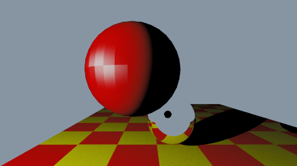
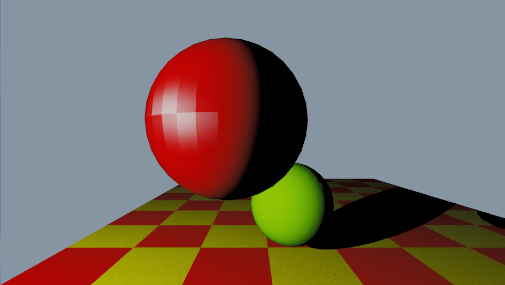
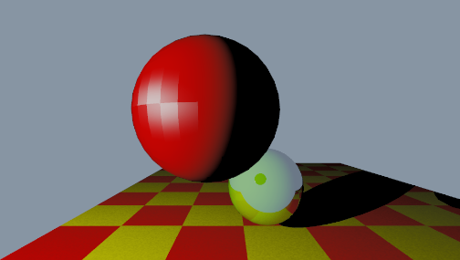
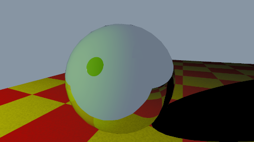

Recursive Ray Tracing – Reflection
But I wrote it as iterative.

kd=0 kr=1

kd=1 kr=0
It was supposed to be recursive
Unknown compile error happened, and it was fixed after I rewrite the function as iterative instead of recursive.
Unity compute shader attempts to flatten the recursive codes.
Reflection only
// Compute shader
static const int MAX_BOUNCES = 6;
//recursive attempt
float3 Illuminate(float3 rayOrigin, float3 rayDirection, int depth)
{
if (depth > MAX_BOUNCES)
{
return float3(0, 0, 0);
}
//intersections... shadow ray...
//recursive reflection
if (mat.kReflection > 0)
{
float3 R = reflect(rayDirection, rec.normal);
float3 reflectOrigin = rec.p + rec.normal * SHADOW_BIAS;
irradiance += mat.kReflection * Illuminate(reflectOrigin, R, depth + 1);
}
//kt = 0 for this checkpoint
return irradiance;
}
float3 TraceRay(float3 rayOrigin, float3 rayDirection)
{
float3 irradiance = Illuminate(rayOrigin, rayDirection, 1);
return irradiance;
}
// Compute shader
//iterative attempt
float3 TraceRay(float3 rayOrigin, float3 rayDirection)
{
float3 currentOrigin = rayOrigin;
float3 currentDirection = rayDirection;
float3 throughput = float3(1, 1, 1);
float3 irradiance = float3(0, 0, 0);
for (int bounce = 0; bounce < MAX_BOUNCES; bounce++)
{
// calculate intersection with triangles
float closestT = 1e30;
int hitTriangleIndex = -1;
bool hit = FindClosestIntersect(currentOrigin, currentDirection, MAX_TRACE_DISTANCE, closestT, hitTriangleIndex);
if (!hit || hitTriangleIndex == -1) // no hit
{
irradiance += throughput * float3(0.5, 0.7, 1.0); //blueish sky
break;
}
Triangle tri = _Triangles[hitTriangleIndex];
Material mat = _Materials[tri.materialIndex];
float3 hitPos = currentOrigin + closestT * currentDirection;
float2 uv = GetInterpolatedUV(hitPos, tri);
// normal
//float3 geometricNormal = normalize(cross(tri.v1 - tri.v0, tri.v2 - tri.v0)); //not smoothed
float3 shadingNormal = GetSmoothNormal(hitPos, tri); //default using smoothed normal
// view (hitpoint to cam)
float3 V = normalize(-currentDirection); // k2
irradiance += throughput * ComputeDirectLighting(hitPos, shadingNormal, V, mat, uv, tri);
//reflection
if (mat.kReflection > 0)
{
currentDirection = reflect(currentDirection, shadingNormal);
currentOrigin = hitPos + shadingNormal * SHADOW_BIAS;
throughput *= mat.kReflection;
}
else
{
break;
}
//kt = 0 for this checkpoint
}
return irradiance;
}
Code explaination
- Recursive attempt did not pass the compile phase and it is not shown in IDE. So I just abandon recursive and implemented it as iterative.
- Refractive(kt) is not implemented in this phase.

kd=0.5 kr=0.5

Whitted limitation, cannot handle glossy reflection
My observation
- It is noticable that if I set kd=0.5 and kr=0.5, the output looks weird.
- The problem here is that the part that is supposed to be dark side shows reflected image but no diffuse color is shown.
Technologies Used
Course:
Global Illumination
Year:
2026